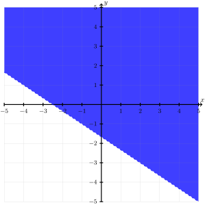

We have focused primarily on functions of the form \(y = mx + b\) or, more generally, on linear equations of the form \(ax + by = c\text{.}\) In this section, we consider linear inequalities in two variables.
Subsection3.6.1Linear Inequalities
Definition3.6.1.Linear Inequality.
A linear inequality in the variables \(x\) and \(y\) is an expression that can be placed in one of the following forms
\(ax + by \lt c\text{,}\)
\(ax + by \leq c\text{,}\)
\(ax + by \gt c\text{,}\) or
\(ax + by \geq c\text{.}\)
Definition3.6.2.Solution to an Inequality.
A solution to an inequality in the variables \(x\) and \(y\) is an ordered pair \((s,t)\) that make the inequality true when
the first coordinate, \(s\text{,}\) is substituted into the inequality for \(x\text{,}\) and
the second coordinate, \(t\text{,}\) is substituted into the inequality for \(y\text{.}\)
Definition3.6.3.Graph of an Inequality.
The graph of an inequality in the variables \(x\) and \(y\) consists of all the points in the plane that are solutions to the inequality.
In this form, we can see the graph of \(2x + 3y \lt 5\) consists of all the points that are below the line \(2x + 3y = 5\text{.}\)
We use a dashed line to indicate the points on the line \(2x + 3y = 5\) are not a solution to the inequality and shade the portion of the plane beneath the line to indicate those points are solutions to the inequality.
Figure3.6.5.The graph of the linear inequality \(2x + 3y \lt 5\text{.}\)
In this form, we can see the graph of \(2x + 3y \lt 5\) consists of all the points that are on or below the line \(2x + 3y = 5\text{.}\)
We use a solid line to indicate the points on the line \(2x + 3y = 5\) are a solution to the linear inequality and shade the portion of the plane beneath the line to indicate that those points are also solutions.
Figure3.6.7.The graph of the linear inequality \(2x + 3y \leq 5\text{.}\)
In this form, we can see the graph of \(2x + 3y \lt 5\) consists of all the points that are above the line \(2x + 3y = 5\text{.}\)
We use a dashed line to indicate the points on the line \(2x + 3y = -5\) are not solutions to the inequality and shade the portion of the plane above the line to indicate that those points are solutions.

Figure3.6.9.The graph of the linear inequality \(2x + 3y \gt -5\text{.}\)
In this form, we can see the graph of \(2x + 3y \lt 5\) consists of all the points that are on or above the line \(2x + 3y = 5\text{.}\)
We use a solid line to indicate the points on the line \(2x + 3y = -5\) are solutions to the linear inequality and shade the portion of the plane above the line to indicate that those points are also solutions.
Figure3.6.11.The graph of the linear inequality \(2x + 3y \geq -5\text{.}\)
Subsection3.6.2Absolute Value and Inequality
Definition3.6.12.Linear Absolute Value Inequality.
A linear absolute value inequality in the variables \(x\) and \(y\) is an expression that can be placed in one of the following forms
\(\abs{ax + by + c} \lt d\text{,}\)
\(\abs{ax + by + c} \leq d\text{,}\)
\(\abs{ax + by + c} \gt d\text{,}\) or
\(\abs{ax + by + c} \geq d\text{.}\)
Let \(d\) be any positive real number. Recall from Definition1.4.1 that
measures the distance between \(d\) and the origin on the number line. By looking at the number line, we can see the distance between \(d\) and the origin is the same as the distance from \(-d\) to the origin.
Figure3.6.13.The distance between \(d\) and the origin, and between \(-d\) and the origin.
Hence for any positive number \(d\text{,}\) there are precisely two numbers that are \(d\) units away from the origin: \(d\) and \(-d\text{.}\) All other numbers are either more than \(d\) units away from the origin or less than \(d\) units away from the origin.
Now consider an equation of the form \(\abs{ax + by + c} = d\text{.}\) The observation above tells us the solutions to this equation are the points \((x,y)\) in the plane such that the number \(ax + by + c\) is exactly\(d\) units away from the origin. As the only two numbers that are \(d\) units away from the origin are \(d\) and \(-d\text{,}\) either
\begin{equation*}
ax + by + c = d \quad\text{or}\quad ax + by + c = -d
\end{equation*}
In standard form, we can recognize these as two parallel lines
\begin{equation*}
ax + by = -c + d \quad\text{and}\quad ax + by = -c - d
\end{equation*}
Geometrically, this tells us the points between these lines make the number \(ax + by + c\)less than \(d\text{,}\) while the points outside these lines make the number \(ax + by + c\)more than \(d\text{.}\) This provides a pleasing geometric description of the solutions to the four types of linear absolute value inequalities:
The solutions to \(\abs{ax + by + c} \lt d\) are the points that are between the lines \(ax + by = -d - c \) and \(ax + by = -c + d\text{,}\)
The solutions to \(\abs{ax + by + c} \leq d\) are the points that are either on or between the lines \(ax + by = -d - c\) and \(ax + by = -c + d\text{,}\)
The solutions to \(\abs{ax + by + c} > d\) are the points that are outside the lines \(ax + by = -c - d\) and \(ax + by = -c + d\text{.}\)
The solutions to \(\abs{ax + by + c} \geq d\) are the points that are either on or outside the lines \(ax + by = -c - d\) and \(ax + by = -c + d\text{.}\)
Example3.6.14.
Graph the linear absolute value inequality \(\abs{2x + 3y} \lt 5\text{.}\)
Solution.
The solutions to the inequality \(\abs{2x + 3y} \lt 5\) are the points between the lines
Since \(2x + 3y = -5\) is the lower line and \(2x + 3y = 5\) is the upper line, we can regard these as the points that are solutions to both of the linear inequalities